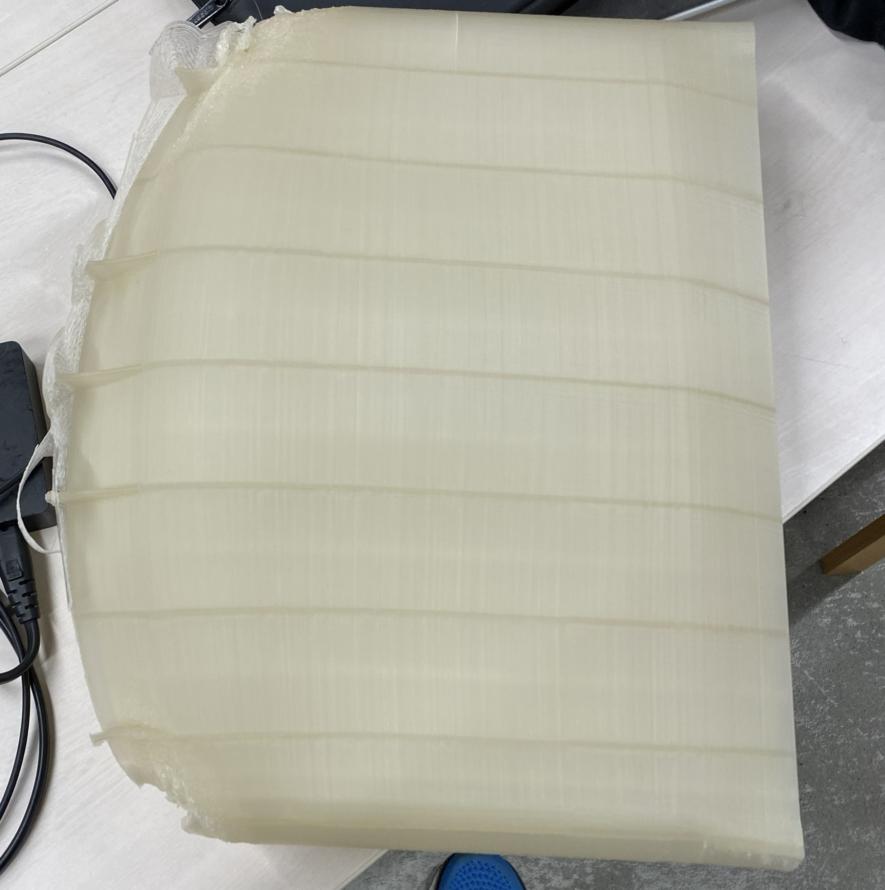

１．課題箇所について
１，全体の一括印刷について
PCケースとなる全体を設計・印刷したところ、大きなゆがみが出てしまった。
熱収縮の反りの対策と衝撃吸収部分をきれいに印刷するため、ケースを立てた状態で印刷したところ
土台近くの部分が歪んでしまった。
印刷ずれはなかったため、印刷が切れにできた後に重みか熱収縮で歪んでしまったと思われる。
また底面部分も長すぎたためか、そりの影響が大きく出ており、その結果上部の印刷に影響が出た
熱収縮と衝撃吸収部分についてはこれ以上の改善はあまりできないため、PCケースという大きめかつ細いものを
一括で印刷することはかなり困難な様子となっている。
解決方法としては衝撃吸収をする部分を小さい部品上にして、複数個組み合わせることで任意の大きさの容器に
する方法が考えられる。
締め切りの期間を考えると分解してマウスにするような構造までは作ることができなさそうなので、
組み立て・分解ができる衝撃吸収材を作ることに注力していく
２，構造部分について また、別の問題として現在の衝撃吸収の構造だと、
ばねのように反射してしまうの衝撃吸収としてはあまりよくないことが分かった
そのため、摩擦によって衝撃吸収ができるような構造に少し改良する必要がある
もしくは、衝撃をばねのように反射すること自体はできるので、
保護ケースというよりも座布団として使うなど長時間負荷がかかるものに
向いているため、改良がうまくいかなかった場合は、
組み立てられる構造も利用してそちらの方面として使われやすいような形にする

熱収縮の反りの対策と衝撃吸収部分をきれいに印刷するため、ケースを立てた状態で印刷したところ
土台近くの部分が歪んでしまった。
印刷ずれはなかったため、印刷が切れにできた後に重みか熱収縮で歪んでしまったと思われる。
また底面部分も長すぎたためか、そりの影響が大きく出ており、その結果上部の印刷に影響が出た
熱収縮と衝撃吸収部分についてはこれ以上の改善はあまりできないため、PCケースという大きめかつ細いものを
一括で印刷することはかなり困難な様子となっている。
解決方法としては衝撃吸収をする部分を小さい部品上にして、複数個組み合わせることで任意の大きさの容器に
する方法が考えられる。
締め切りの期間を考えると分解してマウスにするような構造までは作ることができなさそうなので、
組み立て・分解ができる衝撃吸収材を作ることに注力していく
２，構造部分について また、別の問題として現在の衝撃吸収の構造だと、
ばねのように反射してしまうの衝撃吸収としてはあまりよくないことが分かった
そのため、摩擦によって衝撃吸収ができるような構造に少し改良する必要がある
もしくは、衝撃をばねのように反射すること自体はできるので、
保護ケースというよりも座布団として使うなど長時間負荷がかかるものに
向いているため、改良がうまくいかなかった場合は、
組み立てられる構造も利用してそちらの方面として使われやすいような形にする
２．全体の進捗
組み立てマウスなどは時間と技術の都合上難しいので
衝撃吸収の組み立て構造のみに注力
衝撃吸収構造の原型はできているので
・組み立て部分の設計・テスト
・衝撃吸収構造のブラッシュアップ
が残りの課題
衝撃吸収の組み立て構造のみに注力
衝撃吸収構造の原型はできているので
・組み立て部分の設計・テスト
・衝撃吸収構造のブラッシュアップ
が残りの課題
課題まとめ：
微調整or目的・用途変更→衝撃吸収部分
課題点→組み立てが行えるような
微調整or目的・用途変更→衝撃吸収部分
課題点→組み立てが行えるような